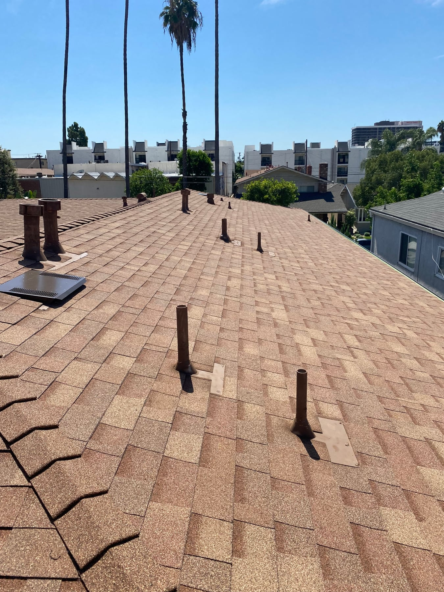
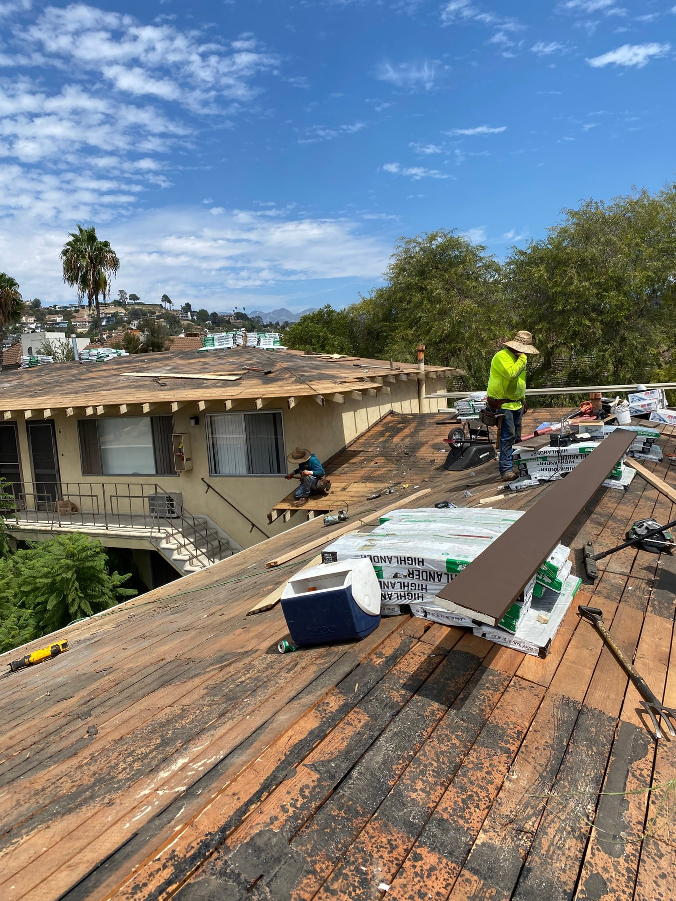
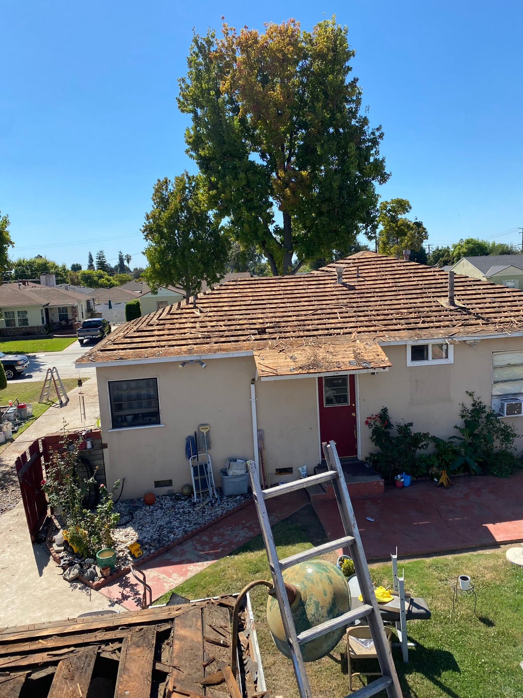

Casas, ampliaciones y garajes
Hablemos del área que necesita reemplazar, su conexión con el techo existente y el acabado que desea.
Expertos en techos en Los Ángeles
Un nuevo comienzo para el techo de su hogar.
Desde un garaje o una ampliación hasta la casa principal, Talamantes Roofing le ayuda a planear el reemplazo de su techo con comunicación clara y un presupuesto gratis.

Reemplazo de techos
Las filtraciones recurrentes, el daño extendido en las tejas o un techo que necesita atención frecuente son motivos para solicitar una inspección. El siguiente paso depende del estado del techo, no solo de cómo se ve desde la calle. Podemos hablar de una reparación y de un reemplazo completo para que tome una decisión informada.
Hablemos del área que necesita reemplazar, su conexión con el techo existente y el acabado que desea.
El tamaño, la pendiente, los materiales elegidos, el acceso y los daños subyacentes ayudan a definir el alcance y el presupuesto.
Pregunte por el trabajo propuesto, la preparación de la propiedad y el calendario previsto antes de comenzar.
Qué esperar
Cuéntenos sobre las filtraciones, las reparaciones anteriores y la parte de la propiedad cuyo techo desea renovar.
Revise el alcance recomendado, las opciones de materiales y sus dudas sobre el techo existente.
Coordine el acceso y las fechas con el equipo, y hable de cómo se atenderán los hallazgos al retirar el techo.
De nuestra galería de proyectos
Estas fotos muestran proyectos distintos, no una secuencia de antes y después.


Un problema localizado puede tener reparación. El deterioro más extenso o los problemas recurrentes pueden hacer conveniente considerar un reemplazo. Una inspección ayuda a aclarar las opciones para su propiedad.
El tiempo varía según el tamaño y la complejidad del techo, la disponibilidad de materiales, el clima y el estado debajo del techo anterior. Solicite un calendario específico con su presupuesto.
Sí. Indíquenos qué área necesita atención. Durante la inspección podemos hablar de esa sección y de su unión con las áreas de techo adyacentes.
Con sede en Los Ángeles. Atendemos Los Ángeles, Orange County, Ventura y San Bernardino.
Horario: todos los días, de 6 a. m. a 6 p. m.